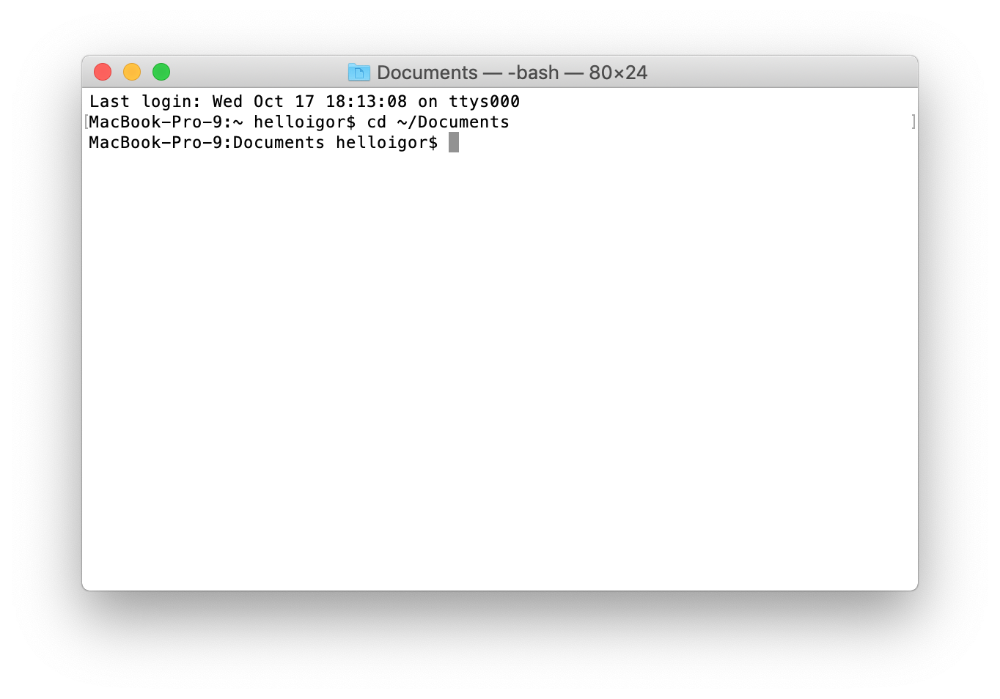

Using the Command Line for Every Day Purposes
History
Before the days of nice looking desktops with pretty backgrounds and docks with applications on them with nicely designed icons, computers were interacted with through the command line. More specifically a shell. Basically a shell is a way for a person to interact with the operating system of a computer. A shell can be a command line interface (CLI) or a graphical user interface (GUI). Originally shells were all CLI. This means that the way users interacted with their computers was all text based. There were no menus or pointers/mouse to click on anything.
Today, modern operating systems still have CLI shells built into them. MacOS has a tool called Terminal, which is a BASH shell. BASH stands for Bourne Again Shell and is the next version of the Bourne shell, which really just means it’s a command interpreter so that the commands you may type into the shell are interpreted by BASH. BASH is also used by Linux so knowledge of BASH commands is often a prerequisite for Linux system administrators. However there are a lot of powerful commands that every day users should also know that could increase their productivity and give them more control over their computers!
How System Administrators Use the Command Line
So what is a system administrator (sysadmin for short)? Well, in a business environment, there often will be internal and external applications. Internal and external in this case just refer to if the application is set up for employees to use or if the application is set up for the public to use. For instance something like spotify would be an external application, but maybe a company has developed an accounting application for employees to use, this would be an internal application. System administrators are in charge of configuring the servers that may run those applications and their upkeep. This is a VERY simplified explanation, but that is the basic just of their jobs. The issue is that there may be hundreds or even thousands of servers for a sysadmin to administer. This is where the command line and shells come into play. From their own computer a system admin can ssh into a server and control it. SSH stands for secure shell and allows the sysadmin to remotely log into a server and have a shell into it to execute commands. From there the sysadmin can do updates, configure servers, check logs, and troubleshoot issues to make sure their applications are running smoothly for the users. Sysadmins can also write Bash scripts, which automate tasks for them. Instead of inputting a bunch of commands over and over again, a sysadmin can write a script to do that job for them. They can also use something called a cron job, which allows them to schedule scripts to run so that they do not have to login to a computer and execute the script themselves. Overall the command line is very integral to a sysadmins job, but it can also be used by everyday users to increase their efficiency and give them sysadmin powers!
How Anyone Can Use the Command Line
Every day users can also use the command line to improve their lives. For instance, recently, my laptop memory was filled and I didn’t really know what files were filling my memory so I used the disk usage command (du) in order to search my files and see what was filling up my memory.
This first key of using the command line is the navigation. If you have ever looked for a file via finder on a mac, you already might have some idea of how to navigate the directories through the command line. Directories/folders are just a way for files to be organized. If you enter ‘command + spacebar’ on your Mac and type ‘Terminal’, you should see the terminal application that allows you to interact with your computer's CLI. It should look something like this:
Here, you start in your user directory. This user directory is personal to you. If someone else has an account on your computer then they will also have a user directory. If you’re the admin of the computer you can access the entire file system of the computer, but if there is another account on your computer without admin access, then they won’t be able to access anything above their home directory. Now let’s try a simple command. Type this into your terminal (thats an L not a 1):
ls -alh
This command shows a list of contents in whatever directory you are currently in. The “tags” after the command are options to change how the command works. Try typing “ls” without the tags. You’ll see a different output. This is common among most commands. The -a in this case shows hidden files/directories. These files and directories are usually hidden because the user should not really be interacting with them. Sometimes it is important to see these files however. The next option we have added here is -l (the letter). This option shows the output in a list format. Each line is a different item in directory and a line should look something like this
ubuntu@ip-172-31-34-251:~/test$ ls -alh
total 12K
drwxrwxr-x 2 ubuntu ubuntu 4.0K Aug 12 23:23 .
drwxr-xr-x 6 ubuntu ubuntu 4.0K Aug 12 23:11 ..
-rw-rw-r-- 1 ubuntu ubuntu 0 Aug 12 23:23 another-file.txt
drwxrwxr-x 2 ubuntu ubuntu 4.0K Aug 13 00:06 some-directory
-rw-rw-r-- 1 ubuntu ubuntu 47 Aug 12 23:11 text-file.txt
You’ll notice that the first line of the output is the total size of the current directory you are in. In the next line it starts with ‘d’ this shows the user that this entry in the list is a directory. Next are the permissions, we won't go into too much detail about permissions, but essentially the 3 groups of ‘rwx’ are permissions for groups of users on the computer. R stands for read, w stands for write, and x means execute. They note who is allowed to read, write, and execute the file. This is important if there are other users on your computer, you may not want them to read your personal files. Next is a number representing the number of files a directory may contain. Then an entry will have two names (here we see ubuntu ubuntu). These names are the creator and owner of the file. Next is the file size, which is self explanatory. Next is the date the file was modified, and finally is the file name. You’ll notice there are two weird file names “.” and “..”. The “.” file represents the current directory and the “..” represents the directory one level above this one. This is important for our next command. Try entering one of the directories in your home directory like this:
cd directory-name
Now try the “ls -alh” command and see what files are in that directory you just entered. Now lets go back to the home directory by typing this command:
cd ..
Awesome! You’re back where you started. You can also automatically return to your home directory by typing “cd” not followed by anything. A useful way to remember the “cd” command is that it stands for “change directory”. You can also traverse multiple directories at once. For instance if we start at my home directory we can go a couple layers down:
ubuntu@ip-172-31-34-251:~$ cd test/some-directory/final-directory/
ubuntu@ip-172-31-34-251:~/test/some-directory/final-directory$
This also works if you want to list the contents of a directory without navigating to it directly. For instance:
ubuntu@ip-172-31-34-251:~$ ls -alh test/some-directory/final-directory/
total 12K
drwxrwxr-x 2 ubuntu ubuntu 4.0K Aug 13 00:14 .
drwxrwxr-x 3 ubuntu ubuntu 4.0K Aug 13 00:12 ..
-rw-rw-r-- 1 ubuntu ubuntu 16 Aug 13 00:14 hello-world.txt
Now lets learn to read files. There are a lot of ways to read files, but for now let’s focus on the “cat” command. Type cat followed by a file or a path to a file like this:
ubuntu@ip-172-31-34-251:~$ cat test/some-directory/final-directory/hello-world.txt
Hello World!!!!
Cat puts the entire contents of the file on the screen. Keep in mind this may not work for some files that are encoded in a certain way. For simple text files though it shows us the contents of the file.
Another useful thing to know is "man". Typing "man" and then any command will show you the manual for the command. Try it for the commands we just learned. To leave the manual just type "q" and hit enter. Then try it for "grep", "find", and "awk". These commands are incredibly useful, but would take a long time to explain and there are also a lot of other good articles that go really in depth on these commands
Overall these commands are just the tip of the iceberg. There are hundred, if not thousands, of commands to learn and use that could be helpful in your every day life. If there something you want to do with your computer but cant find it in the GUI settings, there's probably a way to do it with the command line. Knowing the command line gives you basically full control of your computer. However you definitely want to be careful. A lot of things here are made for professionals and undoing changes is a lot harder here than in the normal GUI. Therefore, you should always know what a command is doing before you run it! especially commands like "rm" which means remove and can remove your whole file system!
Moving Forward
There is a lot to learn from here. Some useful things might be Bash scripting or learning python. You may also want to learn about package managers like brew. Brew lets you install packages on your command line to help you do useful things, like hosting a web servers or even fun things like cowsay. I'll let you find out what cowsay is on your own. The point being is that you should explore as much as you can! The computer is ownly as powerful as the user.